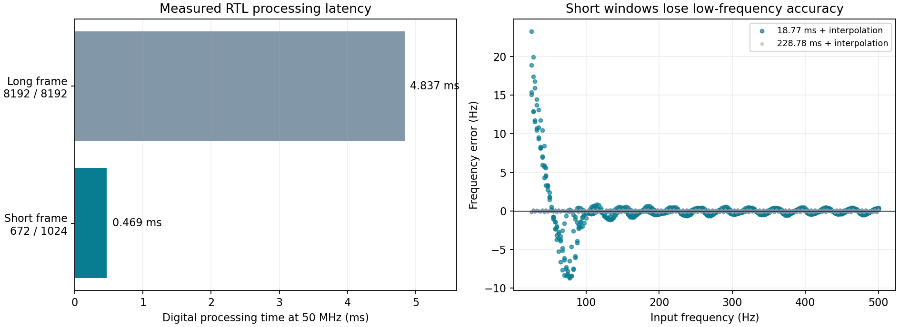
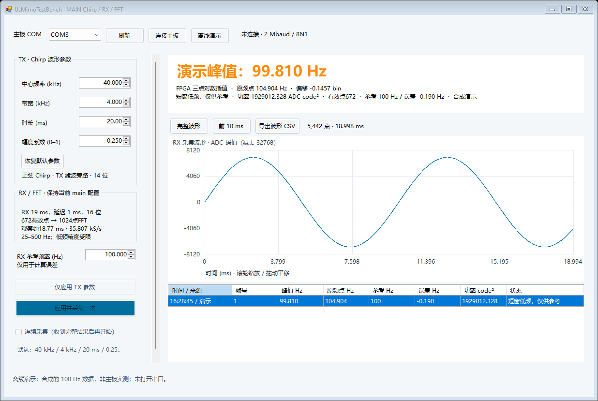

2026-10-20 · 用户选择缩短到Chirp时长，并接受低频精度下降
| 项目 | 旧长窗Main | 新短窗Main |
|---|---|---|
| RX窗口 | 250 ms | 19 ms |
| 有效点 / FFT长度 | 8192 / 8192 | 672 / 1024 |
| 有效观测时长 | 228.780 ms | 18.767 ms |
| 数字处理耗时 | 4.83692 ms | 0.46860 ms |
| 频率格 | 4.371007 Hz | 34.968058 Hz |
| 原始回传点 | 71614 | 5442 |
数字处理以50 MHz RTL周期计数，包含去直流、加窗/FFT、功率与插值，不含采集和UART；约快10.32倍。新UART线路时间约55.15 ms，单次采集/处理/传输约75 ms量级，电脑端额外延迟另计。连续模式仍有约1秒的软件等待。

左：实际RTL状态机计时，长窗使用已验证等延迟行为内存，短窗使用Intel内存模型；右：191频率×4相位，NumPy生成量化频谱，实际RTL完成插值。FFT后的插值没有增加真实采集信息。
| 输入Hz | 长窗插值Hz | 短窗插值Hz | 短窗误差Hz |
|---|---|---|---|
| 25 | 24.861304 | 40.053516 | +15.053516 |
| 100 | 99.921029 | 99.809646 | -0.190354 |
| 500 | 500.113038 | 500.279712 | +0.279712 |
| 250 | 250.115245 | 250.334609 | +0.334609 |
| 99.6 | 99.477566 | 98.777721 | -0.822279 |
100、250、500 Hz示例较接近输入；25 Hz示例明显错误，而且插值结果甚至可能比原整数频点偏差更大。75 Hz也有明显的相位相关误差。不能从一个100 Hz例子推出全频段精度。250 Hz案例含700 Hz干扰，99.6 Hz案例含抽取镜像附近干扰。
Intel内存下的全部FFT实虚部/功率与独立定点参考逐点一致；短/空帧和削顶正确标记。19 ms等效完整数据回传为21770个原始输入、5442个回传点、11029字节；系统测试压缩空闲拍，另做短ADC SPI和真实2Mbaud逐位串口检查。1136组插值检查、生产C#分片解析/长度换算/兼容性检查通过。
全编译通过，84项时序检查均非负，最小余量+0.002 ns（余量较小）；主时钟165 MHz保持原样。资源7067 ALM、31 DSP、272 RAM块；原长窗为7190 ALM、31 DSP、307 RAM块。尚未实板验证。
本次新增M3报文显式携带FFT长度，避免沿用8192点的频率换算。旧固件/旧查看器不能直接用于本次短窗测试；请配套更新。

截图是离线合成演示，非主板实测。
配置：Simulation/FFT/main_settings.json。仍使用同一个QPF和原有测试台。configure_main.py同步生成RTL参数、ROM及软件默认配置块。
全部检查数据 · 对比CSV · 源码和日志 · 参数/协议/复现说明 · 修改前完整配套备份
当前仍只找最强峰；没有新增混频、传播补偿、多峰或距离计算。20ms声路的有效拍频时段还会受传播与模拟滤波影响，需实测后再确定。